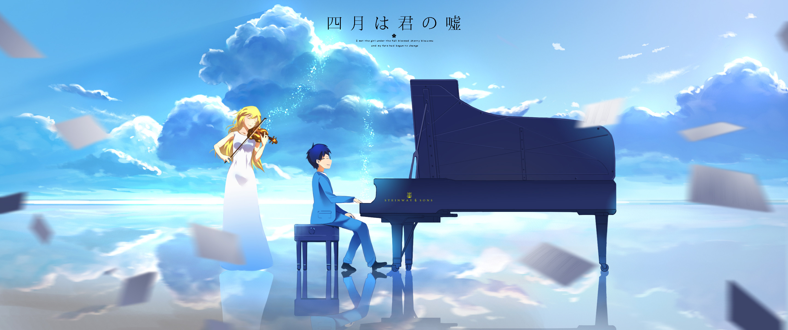

When I was first recomended this series, I could never have expected the level of heartache that it would incite. From the music to the character development over time, to simply the circumstance that Arima Kousei and his beloved friends are forced to endure - all of these things add up to what is a very pure account of the inner workings of a 15 year old's mind. A 15 year old who had been subject to more emotional trauma than many people will experience in their entire lives. I battled with this notion in my head during the first several episodes, that we are watching middle schoolers live their lives. Not high schoolers or college students, but middle schoolers. I can hardly relate to my middle school self any more as it is, so it just took some time for me to understand the intent behind that decision.
The conclusion I ultimately came to was that I was not giving middle schoolers enough credit with regards to their capacity to love, feel deep emotions, and establish meaningful connections with other human beings. If anything, being at that age is the first time when you truly begin the battle with your inner demons. Physically changing, we begin to feel all kinds of new emotions, but that is not to disregard those emotions as fake or not genuine simply because of the correlation to a changing body and mind. I think it is super important to understand all of this when watching this show, because it can be very easy to misjudge the weight of something like Arima and Kaori's love and their relationship overall. I think this is a good segway to begin discussing how I feel about Arima and some of the other main characters.
Arima is a super lovable character. Simple as that. Throughout (almost) the entire show, there was hardly a time where I felt like Arima wasn't genuine and caring to all of his friends. He consistently connects with the audience in a way that lets you understand what he is feeling, and that lends itself to an interesting dynamic where the watcher is given a peek inside Arima's soul. His cirumstance is exceedingly unique, and I think it is safe to say that many people would not ever truly understand that which he is going through. However Arima's character is written such that we all can find a connection to him. He represents isolation, pain, brilliance, kindness, empathy, and so much more. And it is because of all that he represents which makes him so unique as a character.
Kousei, for better and for worse, can attribute a lot of his underlying characteristics to his mother. Now, Saki Arima is a character who I hated from a basic human-decency perspective 98% of the time, and who I empathized with for 2% of the time, and that is being exceedingly generous. No one should ever have to endure a prolonged sickness of which ends is death. However, that in absolutely no way excuses her of the years of emotional and physical trauma she caused her son. At all. It wasn't entirely clear to me if the physical abuse began as her disease progressed, or if it was something that Kousei always had to endure. I am thinking that it was the former due to the way Seto reacted to her hitting Kousei in the concert hall. Even so, the time when his mother was sick seemed to overlap considerably the time in which Kousei remebered her best by. Rather, it doesn't matter if she was different before her diagnosis because all Kousei can remember is the abuse. Unpacking Kousei and his mother's relationship is interesting in and of itself because it really allows a deep dive into the way music defined each of them. Saki was clearly a masterful pianist, as she "coached" Kousei into being one of the most pronounced child pianists in Eastern Japan. It seems clear to me that her love and passion for music was shrouded by a growing desire to make sure Kousei had a promising and successful future to live comfortably after her death. She required nothing short of perfection from Kousei, and as a result he mastered the utility of the piano. To him it was an instrument to garner his mother's approval. It was his only tool to make her happy. But in the thick of it all, he lost the emotion of the piano, as the show goes on to unfold. This is where that whole 2% thing comes in. Saki, albiet very, very poorly, was trying to make sure that her son was going to be able to survive after her passing. And I think for that she deserves an ounce of forgiveness for her treatment of Kousei. But damn did she do a piss poor job of getting that intent across to him. Kousei lost his sound shortly after his mother's passing, which of course made all of that suffering for nothing (disregarding our beloved Kaori and her magical influence on Kousei). She tried so hard to help him, that in the end Saki ended up even farther from her son than where she started. I think that
